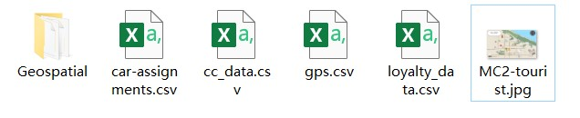

VAST Challenge 2021 Mini-Challenge 2.
GAStech is a Tethys-based company having been operating a natural gas production site in the island country of Kronos for over 20 years. It has produced remarkable profits and developed strong relationships with the government of Kronos, but has not been as successful in demonstrating environmental stewardship.
In January, 2014, the leaders of GAStech are celebrating their new-found fortune as a result of the initial public offering of their very successful company. In the midst of this celebration, several employees of GAStech go missing. An organization known as the Protectors of Kronos (POK) is suspected in the disappearance, but things may not be what they seem.
This case is designed aim at helping the law enforcement from Kronos and Tethys investigate the incident by using data visualization techniques. There are 3 challenges in VAST Challenge 2021 focusing on different aspects of case analysis. In this report we concentrated on visualization and analysis for Mini-Challenge 2.
Many of the Abila, Kronos-based employees of GAStech have company cars which are approved for both personal and business use. Those who do not have company cars have the ability to check out company trucks for business use, but these trucks cannot be used for personal business. The vehicles are installed with GPS tracked periodically as long as they are moving. Besides, in order to promote local businesses, Kronos based companies provide a Kronos Kares benefit card to GASTech employees giving them discounts and rewards in exchange for collecting information about their credit card purchases and preferences as recorded on loyalty cards.
Now the vehicle tracking data for the two weeks prior to the incident, car assignment list, transaction records in credit card and loyal card are available for analyzing.
The challenges to be dealt with are listed below:
| No. | Question |
|---|---|
| 1 | Using just the credit and loyalty card data, identify the most popular locations, and when they are popular. What anomalies do you see? What corrections would you recommend to correct these anomalies? |
| 2 | Add the vehicle data to your analysis of the credit and loyalty card data. How does your assessment of the anomalies in question 1 change based on this new data? What discrepancies between vehicle, credit, and loyalty card data do you find? |
| 3 | Can you infer the owners of each credit card and loyalty card? What is your evidence? Where are there uncertainties in your method? Where are there uncertainties in the data? |
| 4 | Given the data sources provided, identify potential informal or unofficial relationships among GASTech personnel. Provide evidence for these relationships. |
| 5 | Do you see evidence of suspicious activity? Identify 1- 10 locations where you believe the suspicious activity is occurring, and why. |
The detailed information and all the data needed for Mini-challenge 2 is available in VAST Challenge 2021 official website.
The dataset used for Mini-Challenge 2 includes 4 CSV files, a package of ESRI shapefiles of Abila and Kronos, and a tourist map of Abila in JPEG format, as shown in the following screenshot.
Fig.1 Dataset for visualization and analysis
The data contents in the CSV files are listed below:
| File | Description | Data Content |
|---|---|---|
| car-assignments.csv | A list of vehicle assignments by employee | Employee Last Name Employee First Name Car ID Current Employment Type (Department) Current Employment Title (job title) |
| gps.csv | vehicle tracking data | Timestamp Car ID (integer) Latitude Longitude |
| cc_data.csv | credit and debit card transaction data | Timestamp Location (name of the business) Price (real) Last 4 digits of the credit or debit card number |
| loyalty_data.csv | loyalty card transaction data | Timestamp Location (name of the business) Price (real) Loyalty Number (A 5-character code starting with L that is unique for each card) |
We used R studio as the tool to import, process and visualize the data. The first thing is to launch necessary R packages for next steps.
The code chunk below is used to install and load the packages.
packages = c('ggiraph', 'plotly','DT', 'patchwork',
'raster', 'sf','tmap','lubridate', 'clock',
'tidyverse', 'mlr')
for (p in packages){
if(!require(p, character.only = T)){
install.packages(p)
}
library(p, character.only = T)
}
First of all we import the CSV file using below code chunk.
car_ass <- read_csv("data/car-assignments.csv")
gps <- read_csv("data/gps.csv")
cc <- read_csv("data/cc_data.csv", locale = locale(encoding = "windows-1252"))
loyalty <- read_csv("data/loyalty_data.csv", locale = locale(encoding = "windows-1252"))
As shown below, we need to check if the data type is proper in the imported tibble data table. It’s obvious that the Timestamp in gps.csv, cc_data.csv and loyalty_data.csv should be in datetime format but now it’s in character format. Besides, CarID in car-assignments.csv, id in gps.csv and last4ccnum in cc_data.csv should be converted from numerical data to categorical data.
Rows: 44
Columns: 5
$ LastName <chr> "Calixto", "Azada", "Balas", "Barr...
$ FirstName <chr> "Nils", "Lars", "Felix", "Ingrid",...
$ CarID <dbl> 1, 2, 3, 4, 5, 6, 7, 8, 9, 10, 11,...
$ CurrentEmploymentType <chr> "Information Technology", "Enginee...
$ CurrentEmploymentTitle <chr> "IT Helpdesk", "Engineer", "Engine...Rows: 685,169
Columns: 4
$ Timestamp <chr> "01/06/2014 06:28:01", "01/06/2014 06:28:01", "...
$ id <dbl> 35, 35, 35, 35, 35, 35, 35, 35, 35, 35, 35, 35,...
$ lat <dbl> 36.07623, 36.07622, 36.07621, 36.07622, 36.0762...
$ long <dbl> 24.87469, 24.87460, 24.87444, 24.87425, 24.8741...Rows: 1,490
Columns: 4
$ timestamp <chr> "01/06/2014 07:28", "01/06/2014 07:34", "01/06...
$ location <chr> "Brew've Been Served", "Hallowed Grounds", "Br...
$ price <dbl> 11.34, 52.22, 8.33, 16.72, 4.24, 4.17, 28.73, ...
$ last4ccnum <dbl> 4795, 7108, 6816, 9617, 7384, 5368, 7253, 4948...Rows: 1,392
Columns: 4
$ timestamp <chr> "01/06/2014", "01/06/2014", "01/06/2014", "01/...
$ location <chr> "Brew've Been Served", "Brew've Been Served", ...
$ price <dbl> 4.17, 9.60, 16.53, 11.51, 12.93, 4.27, 11.20, ...
$ loyaltynum <chr> "L2247", "L9406", "L8328", "L6417", "L1107", "...We use below code chunk to covert data types.
gps$Timestamp = mdy_hms(gps$Timestamp)
cc$timestamp = mdy_hm(cc$timestamp)
loyalty$timestamp = mdy(loyalty$timestamp)
car_ass$CarID = as.character(car_ass$CarID)
gps$id = as.character(gps$id)
cc$last4ccnum = as.character(cc$last4ccnum)
As the transaction date in credit and loyalty card data are all in January, we derive days and hours from timestamp and display them in different columns in cc_data.csv and loyalty_data.csv using below code chunk.
cc$day = day(cc$timestamp)
cc$hour = hour(cc$timestamp)
loyalty$day = day(loyalty$timestamp)
Then we do some exploration for the data and check the missing values by using the code chunks below. Only CarID in car-assignments.csv has 9 missing values.
knitr::kable(summarizeColumns(car_ass))
| name | type | na | mean | disp | median | mad | min | max | nlevs |
|---|---|---|---|---|---|---|---|---|---|
| LastName | character | 0 | NA | 0.9545455 | NA | NA | 1 | 2 | 38 |
| FirstName | character | 0 | NA | 0.9545455 | NA | NA | 1 | 2 | 43 |
| CarID | character | 9 | NA | NA | NA | NA | 1 | 1 | 35 |
| CurrentEmploymentType | character | 0 | NA | 0.7045455 | NA | NA | 5 | 13 | 5 |
| CurrentEmploymentTitle | character | 0 | NA | 0.7954545 | NA | NA | 1 | 9 | 21 |
knitr::kable(summarizeColumns(gps))
| name | type | na | mean | disp | median | mad | min | max | nlevs |
|---|---|---|---|---|---|---|---|---|---|
| Timestamp | POSIXct | 0 | NA | NA | NA | NA | 1.00000 | 22.00000 | 303206 |
| id | character | 0 | NA | 0.9639315 | NA | NA | 2317.00000 | 24713.00000 | 40 |
| lat | numeric | 0 | 36.06055 | 0.0095989 | 36.05806 | 0.0103162 | 36.04802 | 36.08996 | 0 |
| long | numeric | 0 | 24.87644 | 0.0137735 | 24.87646 | 0.0118898 | 24.82509 | 24.90849 | 0 |
knitr::kable(summarizeColumns(cc))
| name | type | na | mean | disp | median | mad | min | max | nlevs |
|---|---|---|---|---|---|---|---|---|---|
| timestamp | POSIXct | 0 | NA | NA | NA | NA | 1.00 | 16 | 1116 |
| location | character | 0 | NA | 0.8577181 | NA | NA | 1.00 | 212 | 34 |
| price | numeric | 0 | 207.69653 | 740.8554672 | 28.24 | 24.61857 | 2.01 | 10000 | 0 |
| last4ccnum | character | 0 | NA | 0.9751678 | NA | NA | 4.00 | 37 | 55 |
| day | integer | 0 | 11.98725 | 3.9517538 | 12.00 | 5.93040 | 6.00 | 19 | 0 |
| hour | integer | 0 | 13.86376 | 4.5567346 | 13.00 | 7.41300 | 3.00 | 22 | 0 |
knitr::kable(summarizeColumns(loyalty))
| name | type | na | mean | disp | median | mad | min | max | nlevs |
|---|---|---|---|---|---|---|---|---|---|
| timestamp | Date | 0 | NA | NA | NA | NA | 43 | 123.00 | 14 |
| location | character | 0 | NA | 0.8599138 | NA | NA | 1 | 195.00 | 33 |
| price | numeric | 0 | 204.33392 | 719.0137834 | 22.845 | 16.84234 | 3 | 4983.52 | 0 |
| loyaltynum | character | 0 | NA | 0.9604885 | NA | NA | 3 | 55.00 | 54 |
| day | integer | 0 | 12.02945 | 3.9500651 | 13.000 | 5.93040 | 6 | 19.00 | 0 |
The records containing missing values in car-assignment.csv are shown below. We can see these records are all company trucks not for personal use.
| LastName | FirstName | CarID | CurrentEmploymentType | CurrentEmploymentTitle |
|---|---|---|---|---|
| Hafon | Albina | NA | Facilities | Truck Driver |
| Hawelon | Benito | NA | Facilities | Truck Driver |
| Hawelon | Claudio | NA | Facilities | Truck Driver |
| Mies | Henk | NA | Facilities | Truck Driver |
| Morlun | Valeria | NA | Facilities | Truck Driver |
| Morlun | Adan | NA | Facilities | Truck Driver |
| Morluniau | Cecilia | NA | Facilities | Truck Driver |
| Nant | Irene | NA | Facilities | Truck Driver |
| Scozzese | Dylan | NA | Facilities | Truck Driver |
First of all, a 2d histogram with Location by Hour for credit card transaction was built by below code chunk.
gra_1 <- plot_ly(data = cc, x = ~as.factor(hour), y = ~location,
hovertemplate = paste(
" %{yaxis.title.text}: %{y}<br>",
"%{xaxis.title.text}: %{x}<br>",
"Transaction Count: %{z}",
"<extra></extra>")) %>%
add_histogram2d(colors = "Blues") %>%
layout(title = "<b>Graph.1 Credit Card Transcation Frequency by Hour</b>",
xaxis = list(title = "Time", tickmode = "linear"),
yaxis = list(title="Location", tickmode = "linear")
)
gra_1
Then the 2d histograms with Location by Day for credit card and loyalty card transaction were created as below.
gra_2.1 <- plot_ly(data = cc, x = ~as.factor(day), y = ~location,
hovertemplate = paste(
" %{yaxis.title.text}: %{y}<br>",
"%{xaxis.title.text}: %{x}<br>",
"Transaction Count: %{z}",
"<extra></extra>")) %>%
add_histogram2d(colors = "Blues") %>%
layout(annotations = list(text = "Credit Card", showarrow = F, x =17, y=32),
xaxis = list(tickmode = "linear"),
yaxis = list(tickmode = "linear")
)
gra_2.2 <- plot_ly(data = loyalty, x = ~as.factor(day), y = ~location,
hovertemplate = paste(
" Location: %{y}<br>",
"Date of Jan: %{x}<br>",
"Transaction Count: %{z}",
"<extra></extra>")) %>%
add_histogram2d(colors = "Purples") %>%
layout(annotations = list(text = "Loyalty Card", showarrow = F, x =17, y=32),
xaxis = list(tickmode = "linear"),
yaxis = list(tickmode = "linear", visible = T)
)
gra_2 <- subplot(gra_2.1, gra_2.2, nrows = 1, shareY = T) %>%
layout(title = "<b>Graph.2 Transaction Frequency by Day</b>",
xaxis = list(title = "Date of Jan"),
xaxis2 = list(title = "Date of Jan"),
yaxis = list(title = "Location"),
autosize = F, width = 900, width2 = 900, height = 400
)
gra_2